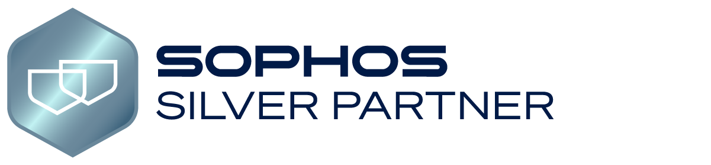

Tecnología e innovación, Sabemos cómo.
Socio estratégico de
Socio estratégico de
tu crecimiento.
Más de 15 años proveyendo soluciones integrales y escalables para atender las necesidades tecnológicas críticas de la República Dominicana.
Habla con nosotros

